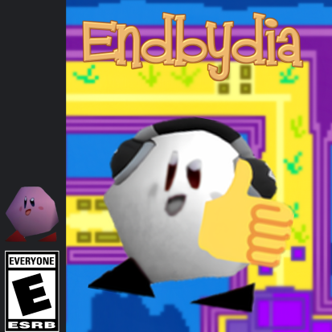

Endbydia el juego
Endbydia 1, el inicio de un fenomeno! Un juego simple que nos introduce en el vasto mundo de los Poyos, juega como Endbydia en su nueva aventura.Haz click aqui para ir a su pagina de descarga!

Endbydia 1, el inicio de un fenomeno! Un juego simple que nos introduce en el vasto mundo de los Poyos, juega como Endbydia en su nueva aventura.Haz click aqui para ir a su pagina de descarga!
Endbydia 2, la secuela del inicio de la Fiebre de los Poyos, es momento de juzgar las acciones de Fabca en este divertido juego!Haz click aqui para ir a su pagina de descarga!
Endbydia 3, la secuela de Endbydia y Endbydia 2: La funa de Fabca sigue los acontecimientos de la saga y nos da una fresca nueva aventura donde nos embarcaremos en un viaje lleno de emoción! Haz click aqui para ir a su pagina de descarga!
Endbydia.exe es un "spin-off"? Que trata sobre el misterioso poyo Endbydia.exe, secretos, sustos y más solo en este juego!!! Haz click aqui para ir a su pagina de descarga!
Endbydia Gameboy Demo es una demo del proximo juego en salir Endbydia Gameboy. Aquí debemos explorar, y pelear en un mini videojuego rpg con un sistema de batalla básico. Haz click aqui para ir a su pagina de descarga!
Es un plataformero en el que endbydia se embarcara en una gran aventura con caracteristicas unicas como saltar lanzar rayos de mute y mucho mas! Disponible en Game Creator.